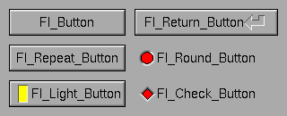
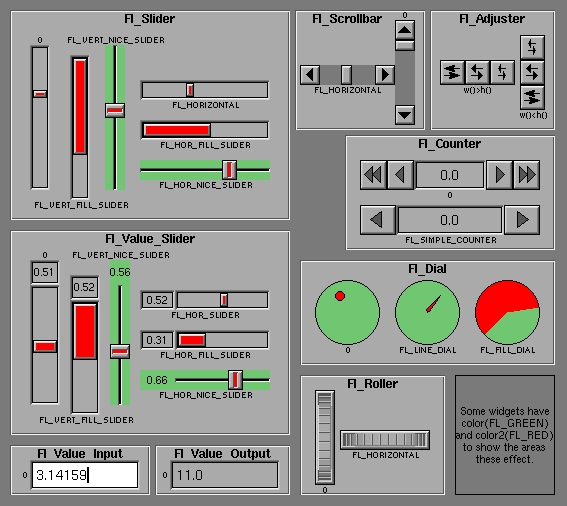
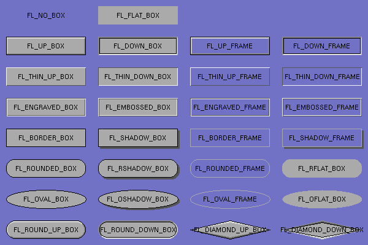
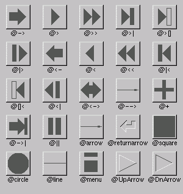

This chapter describes many of the widgets that are provided with FLTK and covers how to query and set the standard attributes.
FLTK provides many types of buttons:

Figure 3-1: FLTK Button Widgets
All of these buttons just need the corresponding <FL/Fl_xyz_Button.H> header file. The constructor takes the bounding box of the button and optionally a label string:
Fl_Button *button = new Fl_Button(x, y, width, height, "label"); Fl_Light_Button *lbutton = new Fl_Light_Button(x, y, width, height); Fl_Round_Button *rbutton = new Fl_Round_Button(x, y, width, height, "label");
Each button has an associated type() which allows it to behave as a push button, toggle button, or radio button:
button->type(FL_NORMAL_BUTTON); lbutton->type(FL_TOGGLE_BUTTON); rbutton->type(FL_RADIO_BUTTON);
For toggle and radio buttons, the value() method returns the current button state (0 = off, 1 = on). The set() and clear() methods can be used on toggle buttons to turn a toggle button on or off, respectively. Radio buttons can be turned on with the setonly() method; this will also turn off other radio buttons in the same group.
FLTK provides several text widgets for displaying and receiving text:
The Fl_Output and Fl_Multiline_Output widgets allow the user to copy text from the output field but not change it.
The value() method is used to get or set the string that is displayed:
Fl_Input *input = new Fl_Input(x, y, width, height, "label");
input->value("Now is the time for all good men...");
The string is copied to the widget's own storage when you set the value() of the widget.
The Fl_Text_Display and Fl_Text_Editor widgets use an associated Fl_Text_Buffer class for the value, instead of a simple string.
Unlike text widgets, valuators keep track of numbers instead of strings. FLTK provides the following valuators:

Figure 3-2: FLTK valuator widgets
The value() method gets and sets the current value of the widget. The minimum() and maximum() methods set the range of values that are reported by the widget.
The Fl_Group widget class is used as a general purpose "container" widget. Besides grouping radio buttons, the groups are used to encapsulate windows, tabs, and scrolled windows. The following group classes are available with FLTK:
The size and position of widgets is usually set when you create them. You can access them with the x(), y(), w(), and h() methods.
You can change the size and position by using the position(), resize(), and size() methods:
button->position(x, y); group->resize(x, y, width, height); window->size(width, height);
If you change a widget's size or position after it is displayed you will have to call redraw() on the widget's parent.
FLTK stores the colors of widgets as an 32-bit unsigned number that is either an index into a color palette of 256 colors or a 24-bit RGB color. The color palette is not the X or WIN32 colormap, but instead is an internal table with fixed contents.
There are symbols for naming some of the more common colors:
These symbols are the default colors for all FLTK widgets. They are explained in more detail in the chapter Enumerations
RGB colors can be set using the fl_rgb_color() function:
Fl_Color c = fl_rgb_color(85, 170, 255);
The widget color is set using the color() method:
button->color(FL_RED);
Similarly, the label color is set using the labelcolor() method:
button->labelcolor(FL_WHITE);
The type Fl_Boxtype stored and returned in Fl_Widget::box() is an enumeration defined in <Enumerations.H>. Figure 3-3 shows the standard box types included with FLTK.

Figure 3-3: FLTK box types
FL_NO_BOX means nothing is drawn at all, so whatever is already on the screen remains. The FL_..._FRAME types only draw their edges, leaving the interior unchanged. The blue color in Figure 3-3 is the area that is not drawn by the frame types.
You can define your own boxtypes by making a small function that draws the box and adding it to the table of boxtypes.
| Note:
This interface has changed in FLTK 2.0! |
The drawing function is passed the bounding box and background color for the widget:
void xyz_draw(int x, int y, int w, int h, Fl_Color c) {
...
}
A simple drawing function might fill a rectangle with the given color and then draw a black outline:
void xyz_draw(int x, int y, int w, int h, Fl_Color c) {
fl_color(c);
fl_rectf(x, y, w, h);
fl_color(FL_BLACK);
fl_rect(x, y, w, h);
}
The Fl::set_boxtype() method adds or replaces the specified box type:
#define XYZ_BOX FL_FREE_BOXTYPE Fl::set_boxtype(XYZ_BOX, xyz_draw, 1, 1, 2, 2);
The last 4 arguments to Fl::set_boxtype() are the offsets for the x, y, width, and height values that should be subtracted when drawing the label inside the box.
The label(), align(), labelfont(), labelsize(), labeltype(), image(), and deimage() methods control the labeling of widgets.
The label() method sets the string that is displayed for the label. Symbols can be included with the label string by escaping them using the "@" symbol - "@@" displays a single at sign. Figure 3-4 shows the available symbols.

Figure 3-4: FLTK label symbols
The @ sign may also be followed by the following optional "formatting" characters, in this order:
Thus, to show a very large arrow pointing downward you would use the label string "@+92->".
The align() method positions the label. The following constants are defined and may be OR'd together as needed:
The labeltype() method sets the type of the label. The following standard label types are included:
The image() and deimage() methods set an image that will be displayed with the widget. The deimage() method sets the image that is shown when the widget is inactive, while the image() method sets the image that is shown when the widget is active.
To make an image you use a subclass of Fl_Image.
Label types are actually indexes into a table of functions that draw them. The primary purpose of this is to use this to draw the labels in ways inaccessible through the fl_font mechanisim (e.g. FL_ENGRAVED_LABEL) or with program-generated letters or symbology.
| Note:
This interface has changed in FLTK 2.0! |
To setup your own label type you will need to write two functions: one to draw and one to measure the label. The draw function is called with a pointer to a Fl_Label structure containing the label information, the bounding box for the label, and the label alignment:
void xyz_draw(const Fl_Label *label, int x, int y, int w, int h, Fl_Align align) {
...
}
The label should be drawn inside this bounding box, even if FL_ALIGN_INSIDE is not enabled. The function is not called if the label value is NULL.
The measure function is called with a pointer to a Fl_Label structure and references to the width and height:
void xyz_measure(const Fl_Label *label, int &w, int &h) {
...
}
The function should measure the size of the label and set w and h to the size it will occupy.
The Fl::set_labeltype method creates a label type using your draw and measure functions:
#define XYZ_LABEL FL_FREE_LABELTYPE Fl::set_labeltype(XYZ_LABEL, xyz_draw, xyz_measure);
The label type number n can be any integer value starting at the constant FL_FREE_LABELTYPE. Once you have added the label type you can use the labeltype() method to select your label type.
The Fl::set_labeltype method can also be used to overload an existing label type such as FL_NORMAL_LABEL.
Callbacks are functions that are called when the value of a widget changes. A callback function is sent a Fl_Widget pointer of the widget that changed and a pointer to data that you provide:
void xyz_callback(Fl_Widget *w, void *data) {
...
}
The callback() method sets the callback function for a widget. You can optionally pass a pointer to some data needed for the callback:
int xyz_data; button->callback(xyz_callback, &xyz_data);
Normally callbacks are performed only when the value of the widget changes. You can change this using the when() method:
button->when(FL_WHEN_NEVER); button->when(FL_WHEN_CHANGED); button->when(FL_WHEN_RELEASE); button->when(FL_WHEN_RELEASE_ALWAYS); button->when(FL_WHEN_ENTER_KEY); button->when(FL_WHEN_ENTER_KEY_ALWAYS); button->when(FL_WHEN_CHANGED | FL_WHEN_NOT_CHANGED);
| Note:
You cannot delete a widget inside a callback, as the widget may still be accessed by FLTK after your callback is completed. Instead, use the Fl::delete_widget() method to mark your widget for deletion when it is safe to do so. Hint: Many programmers new to FLTK or C++ try to use a non-static class method instead of a static class method or function for their callback. Since callbacks are done outside a C++ class, the this pointer is not initialized for class methods. To work around this problem, define a static method in your class that accepts a pointer to the class, and then have the static method call the class method(s) as needed. The data pointer you provide to the callback() method of the widget can be a pointer to the instance of your class.
class foo {
void my_callback(Widget *);
static void my_static_callback(Widget *w, foo *f) { f->my_callback(w); }
...
}
...
w->callback(my_static_callback, this);
|
Shortcuts are key sequences that activate widgets such as buttons or menu items. The shortcut() method sets the shortcut for a widget:
button->shortcut(FL_Enter); button->shortcut(FL_SHIFT + 'b'); button->shortcut(FL_CTRL + 'b'); button->shortcut(FL_ALT + 'b'); button->shortcut(FL_CTRL + FL_ALT + 'b'); button->shortcut(0); // no shortcut
The shortcut value is the key event value - the ASCII value or one of the special keys like FL_Enter - combined with any modifiers like Shift, Alt, and Control.